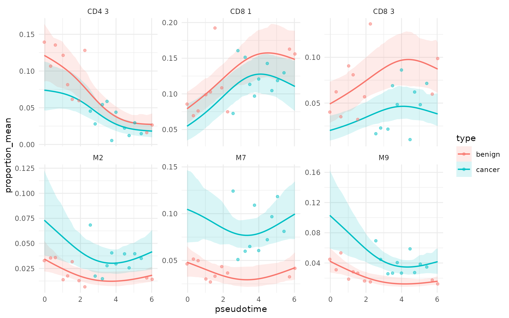
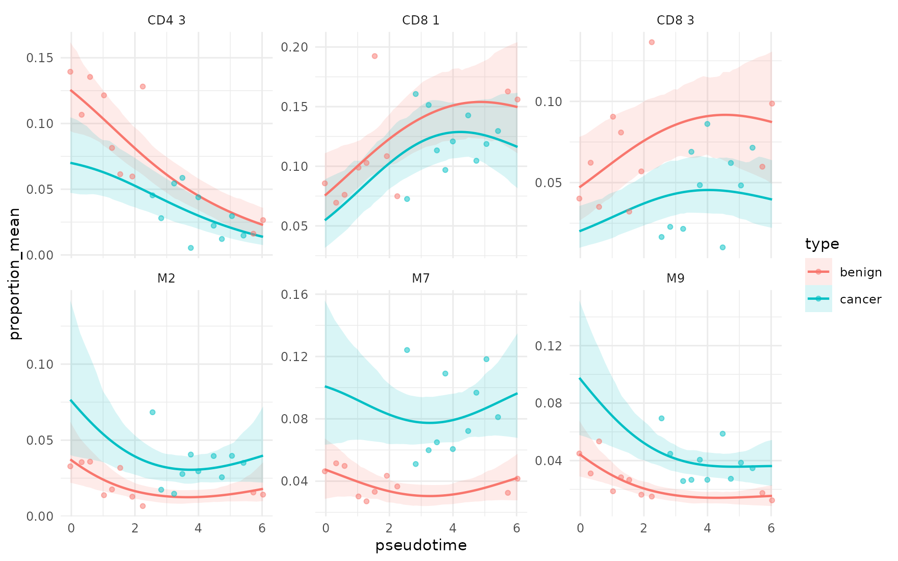
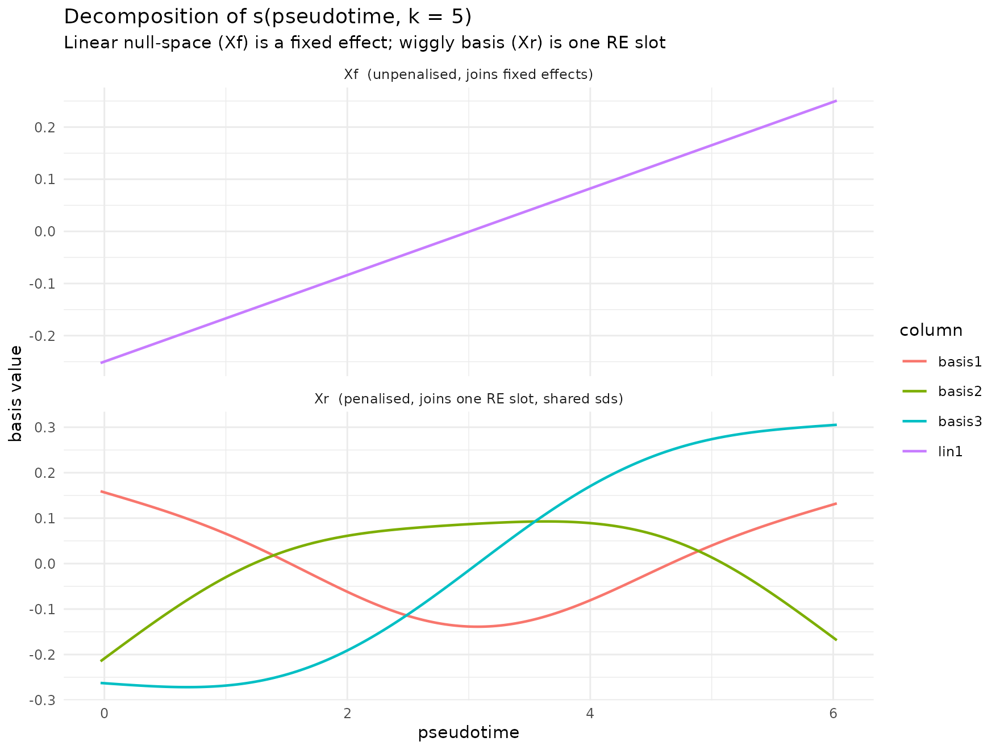
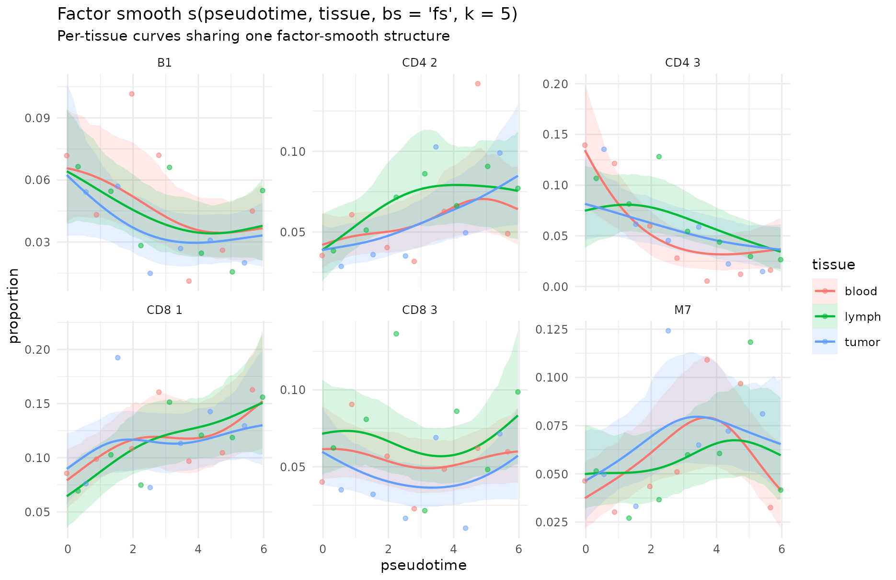

Smooth (spline) terms in sccomp
Stefano Mangiola
2026-07-22
Source:vignettes/splines.Rmd
splines.RmdAbstract
Splines let you model non-linear compositional effects of a continuous covariate. For example, pseudotime, age, dose, time-since-treatment, on cell-type proportions.
Why smooth terms?
Continuous factors in linear models are tricky, becausegenerally you need to make assumptions about their linearity of higher polinomial trend. A spline replaces a single linear column with a small, flexible basis that lets the curve bend, while a penalty keeps the bend conservative
sccomp adopts the same syntax as brms /
mgcv:
~ type + s(pseudotime, k = 5) Under the hood every smooth is split into two pieces:
- an unpenalised linear trend block
Xf, and - a penalised wiggly block
Xr(the non linear part).
What is supported
| Feature | Notes |
|---|---|
s(x, k = ...) in formula_composition
|
|
s(x, z, bs = "fs", k = ...) (factor smooth) |
|
| Multiple smooth terms in the same formula | |
Mix smooths with parametric terms (~ type + s(x)) |
|
Mix smooths with explicit (... | g) random effects |
|
s(x, by = factor) (independent smooths per level) |
Max 2 smooth terms allowed |
Continuous covariate
set.seed(1)
samples <- levels(counts_obj$sample)
pt_map <- tibble(
sample = samples,
pseudotime = seq(0, 6, length.out = length(samples)) +
rnorm(length(samples), 0, 0.05)
)
counts_pt <- counts_obj |> left_join(pt_map, by = "sample")
counts_pt |> distinct(sample, type, pseudotime) |> head()
#> # A tibble: 6 × 3
#> sample type pseudotime
#> <chr> <fct> <dbl>
#> 1 10x_6K benign -0.0313
#> 2 10x_8K benign 0.325
#> 3 GSE115189 benign 0.590
#> 4 SCP345_580 benign 1.03
#> 5 SCP345_860 benign 1.28
#> 6 SCP424_pbmc1 benign 1.541. Fit ~ type + s(pseudotime, k = 5)
fit <- counts_pt |>
sccomp_estimate(
formula_composition = ~ type + s(pseudotime, k = 5),
formula_variability = ~ 1,
sample = "sample",
cell_group = "cell_group",
abundance = "count",
cores = 1,
verbose = FALSE,
max_sampling_iterations = 2000
)The output will include one new linear parameter
s(pseudotime, k = 5)__lin1and three penalised basis
s(pseudotime, k = 5)___basis01
s(pseudotime, k = 5)___basis02
s(pseudotime, k = 5)___basis03
fit |>
sccomp_test() |>
select(cell_group, parameter, c_lower, c_effect, c_upper, c_FDR)
#> Joining with `by = join_by(cell_group, M, parameter)`
#> sccomp model
#> ============
#>
#> Model specifications:
#> Family: multi_beta_binomial
#> Composition formula: ~type + s(pseudotime, k = 5)
#> Variability formula: ~1
#> Inference method: pathfinder
#>
#> Data: Samples: 20 Cell groups: 36
#>
#> Column prefixes: c_ -> composition parameters v_ -> variability parameters
#>
#> Convergence diagnostics:
#> For each parameter, n_eff is the effective sample size and R_k_hat is the potential
#> scale reduction factor on split chains (at convergence, R_k_hat = 1).
#>
#> # A tibble: 216 × 6
#> cell_group parameter c_lower c_effect c_upper c_FDR
#> <chr> <chr> <dbl> <dbl> <dbl> <dbl>
#> 1 B1 (Intercept) 0.918 1.19 1.46 0
#> 2 B1 typecancer -0.859 -0.559 -0.229 0.000625
#> 3 B1 s(pseudotime, k = 5)__lin1 -0.445 -0.0367 0.321 0.222
#> 4 B1 s(pseudotime, k = 5)___basis01 -1.90 -0.653 0.172 0.0585
#> 5 B1 s(pseudotime, k = 5)___basis02 -1.56 -0.338 0.399 0.151
#> 6 B1 s(pseudotime, k = 5)___basis03 -0.944 -0.242 0.419 0.143
#> 7 B2 (Intercept) 0.534 0.849 1.15 0
#> 8 B2 typecancer -1.16 -0.811 -0.445 0
#> 9 B2 s(pseudotime, k = 5)__lin1 -0.256 0.211 0.603 0.0684
#> 10 B2 s(pseudotime, k = 5)___basis01 -2.22 -1.10 -0.165 0.0113
#> # ℹ 206 more rowsThese parameters cannot be interpreted directly, on the contrary of other parameter in the linear model.
2. Visualise the curve
To draw the fitted curve, predict at a regular grid of
pseudotime values (remember to also supply any other
covariates the formula needs — here, type):
grid <- expand.grid(
pseudotime = seq(min(pt_map$pseudotime), max(pt_map$pseudotime), length.out = 60),
type = levels(counts_obj$type)
) |>
as_tibble() |>
mutate(sample = sprintf("grid_%03d", row_number()))
pred <- fit |>
sccomp_predict(new_data = grid, number_of_draws = 200)
#> Running standalone generated quantities after 1 MCMC chain, with 1 thread(s) per chain...
#>
#> Chain 1 Elapsed Time: 1.333 seconds (Generated Quantities)
#> Chain 1 finished in 0.0 seconds.
head(pred)
#> # A tibble: 6 × 10
#> pseudotime type sample cell_group proportion_mean proportion_lower
#> <dbl> <fct> <chr> <chr> <dbl> <dbl>
#> 1 -0.0313 benign grid_001 B1 0.0612 0.0436
#> 2 -0.0313 benign grid_001 B2 0.0298 0.0184
#> 3 -0.0313 benign grid_001 B3 0.00812 0.00501
#> 4 -0.0313 benign grid_001 BM 0.00845 0.00549
#> 5 -0.0313 benign grid_001 CD4 1 0.0256 0.0188
#> 6 -0.0313 benign grid_001 CD4 2 0.0370 0.0257
#> # ℹ 4 more variables: proportion_upper <dbl>, unconstrained_mean <dbl>,
#> # unconstrained_lower <dbl>, unconstrained_upper <dbl>sccomp_predict() already returns the
new_data columns (pseudotime,
type, sample) alongside
proportion_mean and the 95% credible interval
proportion_lower / proportion_upper.
We show the six cell groups with the largest pseudotime range in the posterior mean.
top_cgs <- pred |>
group_by(cell_group) |>
summarise(rng = max(proportion_mean) - min(proportion_mean)) |>
arrange(desc(rng)) |>
slice_head(n = 6) |>
pull(cell_group)
raw <- counts_pt |>
group_by(sample) |>
mutate(prop = count / sum(count)) |>
ungroup() |>
filter(cell_group %in% top_cgs)
pred |>
filter(cell_group %in% top_cgs) |>
ggplot(aes(pseudotime, proportion_mean, colour = type, fill = type)) +
geom_ribbon(aes(ymin = proportion_lower, ymax = proportion_upper),
alpha = 0.15, linewidth = 0) +
geom_line(linewidth = 0.7) +
geom_point(data = raw, aes(y = prop), alpha = 0.5, size = 1.2) +
facet_wrap(~ cell_group, scales = "free_y", ncol = 3) +
theme_minimal(base_size = 10)
The blue/red curves are posterior means, ribbons are 95% credible
intervals, points are observed sample proportions. Note the wiggle —
e.g. CD8 1 peaks around pseudotime ≈ 4 — which a purely linear
~ type + pseudotime model could not capture.
3. Let’s use a smaller basis (k = 3)
The same parametric + smooth layout works with a lower
k. Fewer basis functions mean a smoother curve and less
risk of over-fitting when sample size is modest. Here k = 3
yields one unpenalised linear column and a single wiggly basis
column.
fit_k3 <- counts_pt |>
sccomp_estimate(
formula_composition = ~ type + s(pseudotime, k = 3),
formula_variability = ~ 1,
sample = "sample",
cell_group = "cell_group",
abundance = "count",
cores = 1,
verbose = FALSE,
max_sampling_iterations = 2000
)
pred_k3 <- fit_k3 |>
sccomp_predict(new_data = grid, number_of_draws = 200)
#> Running standalone generated quantities after 1 MCMC chain, with 1 thread(s) per chain...
#>
#> Chain 1 Elapsed Time: 1.317 seconds (Generated Quantities)
#> Chain 1 finished in 0.0 seconds.
pred_k3 |>
filter(cell_group %in% top_cgs) |>
ggplot(aes(pseudotime, proportion_mean, colour = type, fill = type)) +
geom_ribbon(aes(ymin = proportion_lower, ymax = proportion_upper),
alpha = 0.15, linewidth = 0) +
geom_line(linewidth = 0.7) +
geom_point(data = raw, aes(y = prop, colour = type), alpha = 0.5, size = 1.2) +
facet_wrap(~ cell_group, scales = "free_y", ncol = 3) +
theme_minimal(base_size = 10)
Compared with the k = 5 figure above, the credible bands
are often a little tighter and the lines less wiggly: the model has less
capacity to bend, which is appropriate when you want a gentle pseudotime
trend on top of the type effect.
4. Under the hood: What s() actually decomposes
into
The smooth metadata used to fit the model is stored on the result, so
we can re-evaluate the basis at any new pseudotime value. This is
exactly what sccomp_predict() does internally.
smooth_meta <- sccomp:::get_smooth_results(fit)
smooth_specs <- smooth_meta$smooth_specs
smooth_re_objs <- smooth_meta$smooth_re_objs
grid_basis <- tibble(
pseudotime = seq(min(pt_map$pseudotime), max(pt_map$pseudotime), length.out = 200),
type = levels(counts_obj$type)[1] # any constant works; smooth ignores it
)
basis <- sccomp:::predict_smooth_at_newdata(
smooth_specs[[1]], smooth_re_objs[[1]], grid_basis
)
# Plain s() has one penalised block — for multi-penalty smooths
# (e.g. bs = "fs", t2(...)) `Xr_blocks` would contain several matrices.
Xr_single <- basis$Xr_blocks[[1]]
basis_long <- bind_rows(
as.data.frame(basis$Xf) |>
setNames(sprintf("lin%d", seq_len(ncol(basis$Xf)))) |>
mutate(pseudotime = grid_basis$pseudotime) |>
pivot_longer(-pseudotime, names_to = "column", values_to = "value") |>
mutate(block = "Xf (unpenalised, joins fixed effects)"),
as.data.frame(Xr_single) |>
setNames(sprintf("basis%d", seq_len(ncol(Xr_single)))) |>
mutate(pseudotime = grid_basis$pseudotime) |>
pivot_longer(-pseudotime, names_to = "column", values_to = "value") |>
mutate(block = "Xr (penalised, joins one RE slot, shared sds)")
)
ggplot(basis_long, aes(pseudotime, value, colour = column)) +
geom_line(linewidth = 0.7) +
facet_wrap(~ block, scales = "free_y", ncol = 1) +
labs(x = "pseudotime", y = "basis value",
title = "Decomposition of s(pseudotime, k = 5)",
subtitle = "Linear null-space (Xf) is a fixed effect; wiggly basis (Xr) is one RE slot") +
theme_minimal(base_size = 10)
The top panel is the linear trend, the bottom panel
is the wiggly basis: each of these columns gets one
coefficient per cell group, and a single smoothing standard
deviation sds per cell group controls how much wiggle is
allowed. Increasing k would add more wiggly basis columns;
the penalty would then keep the extra capacity from over-fitting.
Hierarchical smooths: per-group curves with shared structure
A common ask is: “fit a smooth per tissue (or per condition, per
donor, …) but partial-pool across groups”. The shorthand for this (also
used in mgcv) is s(x, factor, bs = "fs"). It
builds one common wiggly curve and a per-level deviation, governed
jointly by a small set of smoothing parameters.
1. Fit ~ s(pseudotime, tissue, bs = “fs”, k = 5)
We extend counts_obj with a synthetic
tissue factor (3 levels) on top of the existing
pseudotime:
set.seed(11)
samples <- levels(counts_obj$sample)
covs <- tibble::tibble(
sample = samples,
pseudotime = seq(0, 6, length.out = length(samples)) +
rnorm(length(samples), 0, 0.05),
tissue = factor(rep(c("blood", "lymph", "tumor"),
length.out = length(samples)))
)
counts_tissue <- counts_obj |> dplyr::left_join(covs, by = "sample")
counts_tissue |> dplyr::distinct(sample, type, pseudotime, tissue) |> head()
#> # A tibble: 6 × 4
#> sample type pseudotime tissue
#> <chr> <fct> <dbl> <fct>
#> 1 10x_6K benign -0.0296 blood
#> 2 10x_8K benign 0.317 lymph
#> 3 GSE115189 benign 0.556 tumor
#> 4 SCP345_580 benign 0.879 blood
#> 5 SCP345_860 benign 1.32 lymph
#> 6 SCP424_pbmc1 benign 1.53 tumor
fit_fs <- counts_tissue |>
sccomp_estimate(
formula_composition = ~ s(pseudotime, tissue, bs = "fs", k = 5),
formula_variability = ~ 1,
sample = "sample",
cell_group = "cell_group",
abundance = "count",
cores = 1,
verbose = FALSE,
max_sampling_iterations = 2000
)
# This one smooth occupies 3 RE slots (one per mgcv penalty block);
# you can confirm via:
attr(fit_fs, "model_input")$ncol_X_random_eff
#> [1] 9 3 3 0The three non-zero entries correspond to the wiggly main block (9
columns for k = 5 × 3 tissues) and two smaller per-level
deviation blocks.
2. Predict and plot per-tissue curves
sccomp_predict() takes a grid that crosses
pseudotime with tissue:
grid_fs <- expand.grid(
pseudotime = seq(min(covs$pseudotime), max(covs$pseudotime),
length.out = 60),
tissue = levels(covs$tissue)
) |>
as_tibble() |>
mutate(sample = sprintf("fs_grid_%03d", row_number()))
pred_fs <- fit_fs |>
sccomp_predict(new_data = grid_fs, number_of_draws = 200)
#> Running standalone generated quantities after 1 MCMC chain, with 1 thread(s) per chain...
#>
#> Chain 1 Elapsed Time: 2.027 seconds (Generated Quantities)
#> Chain 1 finished in 0.0 seconds.
head(pred_fs)
#> # A tibble: 6 × 10
#> pseudotime tissue sample cell_group proportion_mean proportion_lower
#> <dbl> <fct> <chr> <chr> <dbl> <dbl>
#> 1 -0.0296 blood fs_grid_001 B1 0.0657 0.0399
#> 2 -0.0296 blood fs_grid_001 B2 0.0240 0.0120
#> 3 -0.0296 blood fs_grid_001 B3 0.0103 0.00674
#> 4 -0.0296 blood fs_grid_001 BM 0.00680 0.00420
#> 5 -0.0296 blood fs_grid_001 CD4 1 0.0280 0.0183
#> 6 -0.0296 blood fs_grid_001 CD4 2 0.0420 0.0276
#> # ℹ 4 more variables: proportion_upper <dbl>, unconstrained_mean <dbl>,
#> # unconstrained_lower <dbl>, unconstrained_upper <dbl>Pick the most pseudotime-responsive cell groups and plot one curve per tissue:
top_cgs_fs <- pred_fs |>
group_by(cell_group) |>
summarise(rng = max(proportion_mean) - min(proportion_mean)) |>
arrange(desc(rng)) |>
slice_head(n = 6) |>
pull(cell_group)
raw_fs <- counts_tissue |>
group_by(sample) |>
mutate(prop = count / sum(count)) |>
ungroup() |>
filter(cell_group %in% top_cgs_fs)
pred_fs |>
filter(cell_group %in% top_cgs_fs) |>
ggplot(aes(pseudotime, proportion_mean,
colour = tissue, fill = tissue)) +
geom_ribbon(aes(ymin = proportion_lower, ymax = proportion_upper),
alpha = 0.15, linewidth = 0) +
geom_line(linewidth = 0.7) +
geom_point(data = raw_fs, aes(y = prop, colour = tissue),
alpha = 0.5, size = 1.2) +
facet_wrap(~ cell_group, scales = "free_y", ncol = 3) +
labs(x = "pseudotime", y = "proportion",
title = "Factor smooth s(pseudotime, tissue, bs = 'fs', k = 5)",
subtitle = "Per-tissue curves sharing one factor-smooth structure") +
theme_minimal(base_size = 10)
The three coloured curves are the same smooth applied to different tissues, allowed to deviate at each pseudotime point. Where the deviations are small (e.g. CD8 1) the curves track each other; where they are large (e.g. CD8 2) one tissue diverges. Whether the deviations are “real” is expressed by the credible-interval ribbons — overlap means the data don’t support a difference.
fs vs s(x, by = tissue)
s(x, by = tissue) is an alternative spelling that
also gives a per-tissue curve, but it treats each tissue’s
smooth as independent: each level gets its own smoothing parameter, and
the curves can have totally unrelated shape. Use bs = "fs"
when you want a single shared smoothness scale and partial pooling
across levels; use by = when the tissues are clearly
heterogeneous and a shared smoothness assumption would be
misleading.
Multiple smooths and mixing with random effects
sccomp can model up to two splines together with random
effects.
~ type +
s(pseudotime, k = 5) +
s(age, k = 4) +
(1 | donor)Session info
#> R version 4.6.1 (2026-06-24)
#> Platform: x86_64-pc-linux-gnu
#> Running under: Ubuntu 24.04.4 LTS
#>
#> Matrix products: default
#> BLAS: /usr/lib/x86_64-linux-gnu/openblas-pthread/libblas.so.3
#> LAPACK: /usr/lib/x86_64-linux-gnu/openblas-pthread/libopenblasp-r0.3.26.so; LAPACK version 3.12.0
#>
#> locale:
#> [1] LC_CTYPE=C.UTF-8 LC_NUMERIC=C LC_TIME=C.UTF-8
#> [4] LC_COLLATE=C.UTF-8 LC_MONETARY=C.UTF-8 LC_MESSAGES=C.UTF-8
#> [7] LC_PAPER=C.UTF-8 LC_NAME=C LC_ADDRESS=C
#> [10] LC_TELEPHONE=C LC_MEASUREMENT=C.UTF-8 LC_IDENTIFICATION=C
#>
#> time zone: UTC
#> tzcode source: system (glibc)
#>
#> attached base packages:
#> [1] stats graphics grDevices utils datasets methods base
#>
#> other attached packages:
#> [1] sccomp_2.1.34 instantiate_0.2.3 ggplot2_4.0.3 tidyr_1.3.2
#> [5] dplyr_1.2.1
#>
#> loaded via a namespace (and not attached):
#> [1] tidyselect_1.2.1 farver_2.1.2
#> [3] S7_0.2.2 fastmap_1.2.0
#> [5] SingleCellExperiment_1.34.0 tensorA_0.36.2.1
#> [7] digest_0.6.39 lifecycle_1.0.5
#> [9] processx_3.9.0 magrittr_2.0.5
#> [11] posterior_1.7.0 compiler_4.6.1
#> [13] rlang_1.3.0 sass_0.4.10
#> [15] tools_4.6.1 utf8_1.2.6
#> [17] yaml_2.3.12 data.table_1.18.4
#> [19] knitr_1.51 labeling_0.4.3
#> [21] S4Arrays_1.12.0 htmlwidgets_1.6.4
#> [23] DelayedArray_0.38.2 RColorBrewer_1.1-3
#> [25] cmdstanr_0.9.0 abind_1.4-8
#> [27] withr_3.0.3 purrr_1.2.2
#> [29] BiocGenerics_0.58.1 desc_1.4.3
#> [31] grid_4.6.1 stats4_4.6.1
#> [33] scales_1.4.0 SummarizedExperiment_1.42.0
#> [35] cli_3.6.6 rmarkdown_2.31
#> [37] crayon_1.5.3 ragg_1.5.2
#> [39] generics_0.1.4 otel_0.2.0
#> [41] tzdb_0.5.0 cachem_1.1.0
#> [43] stringr_1.6.0 splines_4.6.1
#> [45] parallel_4.6.1 XVector_0.52.0
#> [47] matrixStats_1.5.0 vctrs_0.7.3
#> [49] Matrix_1.7-5 jsonlite_2.0.0
#> [51] callr_3.8.0 IRanges_2.46.0
#> [53] hms_1.1.4 patchwork_1.3.2
#> [55] S4Vectors_0.50.1 ggrepel_0.9.8
#> [57] systemfonts_1.3.2 jquerylib_0.1.4
#> [59] glue_1.8.1 ggside_0.4.1
#> [61] pkgdown_2.2.1 ps_1.9.3
#> [63] distributional_0.8.1 stringi_1.8.7
#> [65] gtable_0.3.6 GenomicRanges_1.64.0
#> [67] tibble_3.3.1 pillar_1.11.1
#> [69] htmltools_0.5.9 Seqinfo_1.2.0
#> [71] R6_2.6.1 textshaping_1.0.5
#> [73] evaluate_1.0.5 Biobase_2.72.0
#> [75] lattice_0.22-9 readr_2.2.0
#> [77] backports_1.5.1 bslib_0.11.0
#> [79] Rcpp_1.1.2 nlme_3.1-169
#> [81] SparseArray_1.12.2 checkmate_2.3.4
#> [83] mgcv_1.9-4 xfun_0.60
#> [85] fs_2.1.0 MatrixGenerics_1.24.0
#> [87] forcats_1.0.1 prettydoc_0.4.1
#> [89] pkgconfig_2.0.3